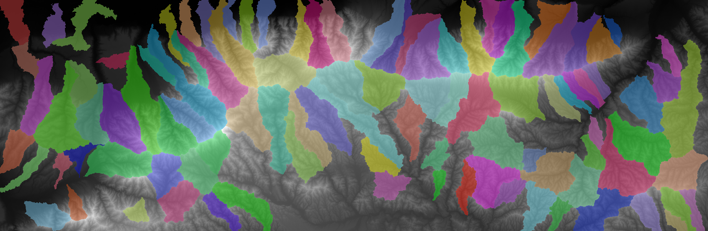

Each time you connect to the server, you will need to load LSDTopoTools before running the first command. Simply type:
load_LSDTopoTools
Run your first topographic analysis of your study area using LSDTopoTools [resource]. Download the outputs on your computer and explore all the data in QGIS…
The raster outputs:
| Filename | Output |
|---|---|
_Fill.bil |
the filled DEM |
_sh.bil |
the hillshade |
_d8_area.bil |
the flow accumulation or drainage area, using the deterministic-8 method (in square meters) |
_FDIST.bil |
the horizontal distance from the outlet along the river network (in meters) |
_SLOPE.bil |
the slope on the non-filled DEM (as a gradient in m/m, i.e. dz / dx) |
_ASPECT.bil |
the aspect (in degrees, from 0° to 360°) |
_CURV.bil |
the curvature |
_AllBasins.bil |
the selected river catchments (also used for basic Chi analysis) |
The table outputs, i.e. to be spatialised in QGIS as text-delimited layers (see QGIS tips):
| Filename | Output |
|---|---|
_CN.csv |
the channel network |
_JN.csv |
the junctions, i.e. river outlets of the channel network |
_chi_data_map.csv |
the basic chi computation for selected catchments |
With these outputs, you are now able to compute a first graph of longitudinal profiles of the rivers in your study area. However, it will be poorly useful as too many river streams are extracted from the DEM.
Computing hillshade and slope will help you to get a better visualisation of the topography. The two rasters are normally created during the previous step using the lsdtt-basic-metrics module of LSDTopoTools. Otherwise, you can generate these outputs using toolboxes in QGIS via the menu “Raster > Analysis”.
The typical purpose of the hillshade it to create a 3D impression of your DEM. To do so, the hillshade should be superimposed to the DEM with a given transparency. To set the transparency in QGIS, choose the tab “Transparency” in the layer properties and adjust the value.
Using the hillshaded DEM, you can do the following steps just by visual inspection :
In addition, draw transversal profiles to capture the global topography of the area, using the plugin “Profile tool” (see random topics). Export outputs into text files and process them in Excel or R.
Eventually, you can confront your observations with literature and geological setting of your study area.
The use of LSDTopoTools might confusing and the learning curve a bit steep in the beginning… The distinction between things that can be done in LSDTopoTools and in QGIS can be difficult too. In addition, some functions and capabilities of the 3 modules of LSDTopoTools overlap with each other. You can indeed create the river network using the lsdtt-chi-analysis module for instance, whereas there is a specific lsdtt-channel-extraction module. It is partly due to the fact that advanced computations need the basic ones as inputs and partly due to the fact that you manipulate an open-source software that is incrementally built by researchers depending on their needs… Therefore, before going further in the analysis, a mandatory step is to plan your work…
Write down a work plan / workflow (diagram with annotations, drawing, short text,…) of analyses required to fulfill the project. This work plan should detail each milestone to achieve the project and how everything connects to the final goal.
Create your work plan in the related tab of your group channel on Microsoft Teams.
The tab “Workflow” is a OneNote notebook that can be edited simultaneously by each member of the channel. You can create several notes, draw sketches, includes post-its, files, images…
In order to analyse the spatial pattern of the tectonic signal in your study area, you will compare rivers and associated river catchments. Therefore, the first step is to extract the river network and catchments.
In the first topographic analysis, two parameters are set to create the river network:
print_channels_to_csv: true
threshold_contributing_pixels: 1000
The default value of contributing pixels to initiate rivers is set to 1000. By default, it produces something like:
As with the Channel extraction toolbox of QGIS, you can tune this parameter that represents the amount of water which is needed to create river sources:
threshold_contributing_pixels: 5000
The idea is to have a channel network that does not account for high-order rivers. Think about maniability of datasets for further analyses. You do not want delete unwanted streams by hand to discard very small first-order streams.
In addition, LSDTopoTools can create a .csv file containing the river junctions, i.e. _JN.csv. The latter can be useful to limit subsequent analyses to selected river catchments (documentation):
print_junctions_to_csv: true

Perform a sensitivity analysis on the threshold_contributing_pixels parameter in order to derive a satisfying river network, which will be the basis for further analyses.
In topographic analysis, you will not only analyse rivers but also catchments, i.e. mainly for hypsometric curves and chi computation with LSDTopoTools. Two methods are available: (1) automatic delineation using minimum and maximum catchment areas or (2) manual delineation by selecting outlets of interest.
Using the automatic delineation will require a sensitivity analysis on minimum and maximum catchment area parameters, in order to produce a relevant subsequent analysis.
The idea is to get catchments that are not too large, i.e. the comparison between catchments will be limited, but also not too small, i.e. the amount of catchments will complicate the comparison. Find a reasonable trade-off between precision and “maniability” of the data.
To extract river catchments, you can use the lsdtt-basic-metrics module and tune the following parameters:
# Getting the basins
find_basins: true
minimum_basin_size_pixels: 100000
maximum_basin_size_pixels: 400000

Here, we miss some small catchments, especially those draining to the North. Let’s decrease the minimum_basin_size_pixels parameter…
# Getting the basins
find_basins: true
minimum_basin_size_pixels: 10000
maximum_basin_size_pixels: 400000

If you want to divide the larger catchments to have a finer resolution, simply decrease the maximum_basin_size_pixels parameter…
# Getting the basins
find_basins: true
minimum_basin_size_pixels: 10000
maximum_basin_size_pixels: 100000

Then, we miss the lower extents of catchments. We therefore need to decrease the minimum_basin_size_pixels again…
# Getting the basins
find_basins: true
minimum_basin_size_pixels: 1000
maximum_basin_size_pixels: 100000
You can manually delineate river catchments by selecting junctions (documentation).
Spatialise the _JN.csv in QGIS.
In this layer, select points that you would like to consider as outlets for the selection of catchments.
Note the values of the junction column in the attribute table.

Create a text file, e.g. junctions.txt, which will contain the junction values, i.e. one number per line and upload it in the analysis folder on the server.

In the parameters file of your LSDTopoTools analysis, add the following line to force the software to run analyses only on selected catchments.
BaselevelJunctions_file: junctions.txt
Once you ran the analysis using the lsdtt-basic-metrics module, you will get something like:

Now that you have properly delineated the river network and associated catchments in your study area, the question is: which rivers will be selected for an in-depth analysis, i.e. transversal profiles, hypsometric curves… Of course, if you are very comfortable with automated geo-processing in QGIS, R or Python, you could perform the analysis on the entire set of delineated river catchments. However, developing advanced automated workflow for geoprocessing is out of scope in this research project… Therefore, you need to find a way to select catchments differently than randomly. To do that, one method is to compute a basic version of the Chi value for every single point of the river network for delineated catchments using the lsdtt-basic-metrics module with the following parameter:
print_chi_data_maps: true
You will end up with a .csv table that contains several useful information to produce graphs the first graphs for the entire study area and get the big picture…

The basin_key variable in the attribute table enables to categorise points by catchment. Using chi and elevation columns, you can compute basic Chi plots, as e.g. in Perroy and Royden (2013).
Processing this table in Excel/R will enable you to produce longitudinal profiles along with Chi plots for the entire study. With that, you will be able to highlight rivers that are in equilibrium or not, patterns in rivers, groups of rivers… Example from Perron and Royden (2013):

Expected outputs for further discussion are:
The simple method to compute steepness and concavity is to derive these metrics from the Slope-Area graphs. For an advanced and robust method to derive concavity for selected river catchments, refer to LSDTopoTools documentation.